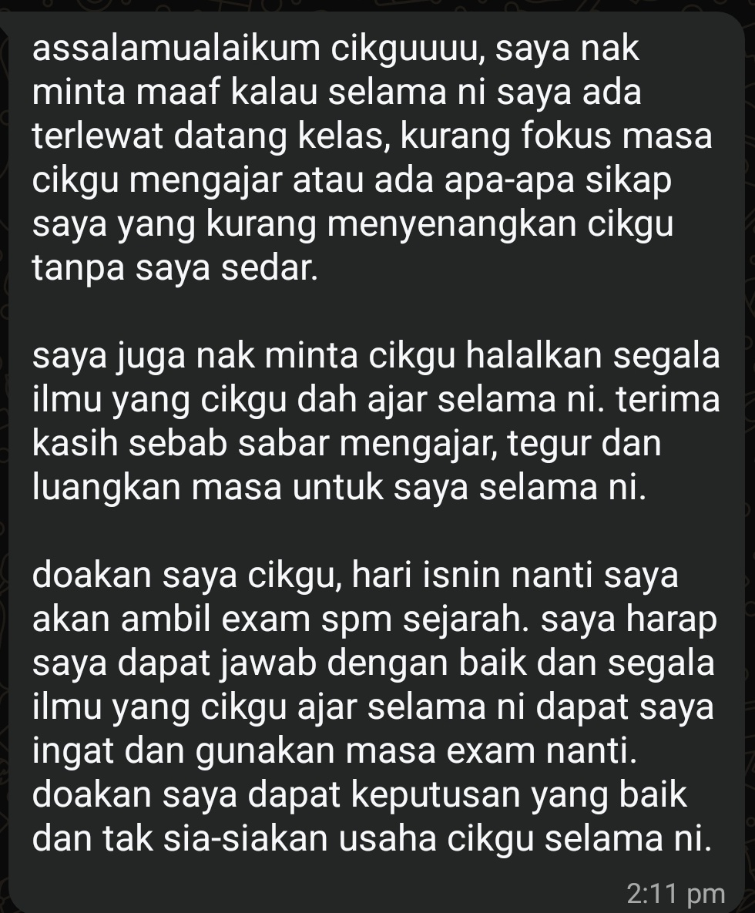

<!doctype html>
<html lang="ms">
<head>
<meta charset="utf-8">
<title>Titik Sejarah Halalkan Ilmu</title>
<style>
@font-face{font-family:'Marker';src:url(fonts/PermanentMarker.woff2) format('woff2')}
@font-face{font-family:'Caveat';src:url(fonts/Caveat.woff2) format('woff2');font-weight:400 700}
@font-face{font-family:'Baloo';src:url(fonts/Baloo2.woff2) format('woff2');font-weight:400 800}
html,body{margin:0;width:1080px;height:1920px;overflow:hidden}
/* Calm night-before mood: navy page, soft gold glow (brand palette only) */
#c{position:relative;width:1080px;height:1920px;overflow:hidden;background:radial-gradient(ellipse 900px 700px at 50% 1180px,rgba(245,201,40,.20),transparent 70%),#172C63;color:#F3EBDD;font-family:'Baloo'}
#c::after{content:'';position:absolute;inset:0;background:url(paper.jpg);mix-blend-mode:multiply;opacity:.16;pointer-events:none}
.abs{position:absolute}
.abs svg{display:block;width:100%;height:auto;overflow:visible}
.ctr{left:0;width:1080px;text-align:center}
.chip{display:inline-block;background:#F3EBDD;color:#172C63;font-family:'Marker';font-size:40px;padding:6px 30px 10px;border-radius:14px;box-shadow:6px 7px 0 #C93436}
.shot{left:250px;top:245px;width:580px;box-sizing:border-box;padding:14px;background:#F3EBDD;border-radius:26px;box-shadow:12px 14px 0 #0E1B3E;transform:rotate(-2deg)}
.shot img{display:block;width:100%;border-radius:16px}
.tape{position:absolute;width:150px;height:44px;background:rgba(245,201,40,.85)}
.note{font-family:'Caveat';font-weight:700;font-size:40px;line-height:1;color:#F5C928}
.l1{font-family:'Marker';font-size:62px;line-height:1.05;color:#F3EBDD;white-space:nowrap}
.l2{font-family:'Marker';font-size:150px;line-height:1;color:#F5C928;text-shadow:10px 12px 0 #C93436;white-space:nowrap}
.msg{left:40px;width:1000px;text-align:center;font-family:'Caveat';font-weight:700;font-size:48px;white-space:nowrap;line-height:1.18;color:#F3EBDD}
.msg b{color:#F5C928;font-weight:700}
.sm{left:40px;width:1000px;white-space:nowrap;text-align:center;font-family:'Baloo';font-weight:600;font-size:28px;line-height:1.35;color:rgba(243,235,221,.8)}
.foot{left:0;width:1080px;top:1730px;display:flex;justify-content:center;align-items:center;gap:18px}
.foot .dp{width:96px;height:96px;border:5px solid #F5C928;background:#fff url(../assets/brand/titik-sejarah-dp-square.jpg) center/cover;box-shadow:6px 7px 0 #C93436;flex:none}
.foot .t{font-family:'Marker';font-size:44px;line-height:.95;color:#F3EBDD}
.foot .tg{font-family:'Caveat';font-weight:700;font-size:34px;color:#F5C928;margin-top:4px}
</style>
<script src="../node_modules/roughjs/bundled/rough.js"></script>
</head>
<body>
<div id="c"></div>
<script type="module">
import { D, C, setSeed } from './doodles.js';
const c = document.getElementById('c');
const add = (html, css, cls = 'abs') => { const d = document.createElement('div'); d.className = cls; d.style.cssText = css; d.innerHTML = html; c.appendChild(d); return d; };
await document.fonts.ready;
setSeed(3011);

// 1) Label
add('<span class="chip">SEBELUM MASUK DEWAN</span>', 'top:130px;transform:rotate(-2deg)', 'abs ctr');

// 2) The real message from a student (unedited)
add('', '', 'abs shot');
add('', 'left:265px;top:228px;transform:rotate(-12deg)', 'tape');
add('', 'left:670px;top:224px;transform:rotate(8deg)', 'tape');
add('mesej sebenar<br>seorang pelajar', 'left:845px;top:820px;width:200px;text-align:center;transform:rotate(-5deg)', 'abs note');

// 3) Main message
add('Semua ilmu yang cikgu bagi,', 'top:1035px;transform:rotate(-2deg)', 'abs ctr l1');
add('HALALKAN!', 'top:1110px;transform:rotate(-2deg)', 'abs ctr l2');

// 4) Short reminder
add('Sebelum masuk dewan, luangkan masa sekejap.<br><b>Minta maaf, minta halalkan ilmu</b><br>dan ucap terima kasih pada cikgu Sejarah korang.', 'top:1335px', 'abs msg');
add('Di sebalik setiap bab yang kita ingat, ada cikgu yang sabar mengajar.', 'top:1550px', 'abs sm');
add(D.heart(C.red), 'left:110px;top:520px;width:80px;transform:rotate(-12deg)');
add(D.heart(C.gold), 'left:880px;top:420px;width:66px;transform:rotate(10deg)');

// 5) Brand
add('<div class="dp"></div><div><div class="t">TITIK <span style="color:#C93436">SEJARAH</span></div><div class="tg">Semoga berjaya, calon SPM.</div></div>', '', 'abs foot');

await new Promise((r) => requestAnimationFrame(() => requestAnimationFrame(r)));
await Promise.all([...document.images].map((im) => (im.complete ? 0 : new Promise((r) => (im.onload = im.onerror = r)))));
window.__done = true;
</script>
</body>
</html>
